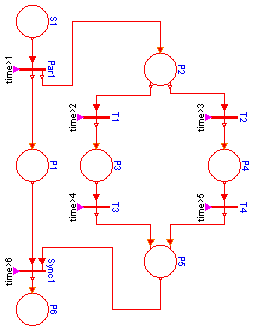

This is an example to demonstrate in which way parallel activities can be modelled by a Petri net. When transition "Par1" fires (after 1 second), two branches are executed in parallel. After 6 seconds the two branches are synchronized in order to arrive at place "P6".
Before simulating the model, try to figure out whether branch P2-P3-P5 or branch P2-P4-P5 is executed.
Simulate for 7 seconds and plot the following variables:
S1state, P1state, P2state, ..., P6state
model Parallel "Example to demonstrate parallel activities described by a petri net " extends Modelica.Icons.Example; output Boolean S1state; output Boolean P1state; output Boolean P2state; output Boolean P3state; output Boolean P4state; output Boolean P5state; output Boolean P6state; PetriNets.Place01 S1(initialState=true); PetriNets.Place11 P1; PetriNets.Parallel Par1(condLabel="time>1"); PetriNets.Place12 P2; PetriNets.Transition T1(condLabel="time>2"); PetriNets.Transition T2(condLabel="time>3"); PetriNets.Place11 P3; PetriNets.Transition T3(condLabel="time>4"); PetriNets.Place11 P4; PetriNets.Transition T4(condLabel="time>5"); PetriNets.Place21 P5; PetriNets.Synchronize Sync1(condLabel="time>6"); PetriNets.Place10 P6; equation connect(Par1.outTransition1, P1.inTransition); connect(T1.outTransition, P3.inTransition); connect(P3.outTransition, T3.inTransition); connect(P1.outTransition, Sync1.inTransition1); connect(Sync1.outTransition, P6.inTransition); connect(T2.outTransition, P4.inTransition); connect(P4.outTransition, T4.inTransition); connect(S1.outTransition, Par1.inTransition); connect(T3.outTransition, P5.inTransition1); connect(T4.outTransition, P5.inTransition2); connect(P2.outTransition2, T2.inTransition); connect(Par1.outTransition2, P2.inTransition); connect(P5.outTransition, Sync1.inTransition2); connect(P2.outTransition1, T1.inTransition); Par1.condition = time > 1; T1.condition = time > 2; T2.condition = time > 3; T3.condition = time > 4; T4.condition = time > 5; Sync1.condition = time > 6; /*output variables*/ S1state = S1.state; P1state = P1.state; P2state = P2.state; P3state = P3.state; P4state = P4.state; P5state = P5.state; P6state = P6.state; end Parallel;